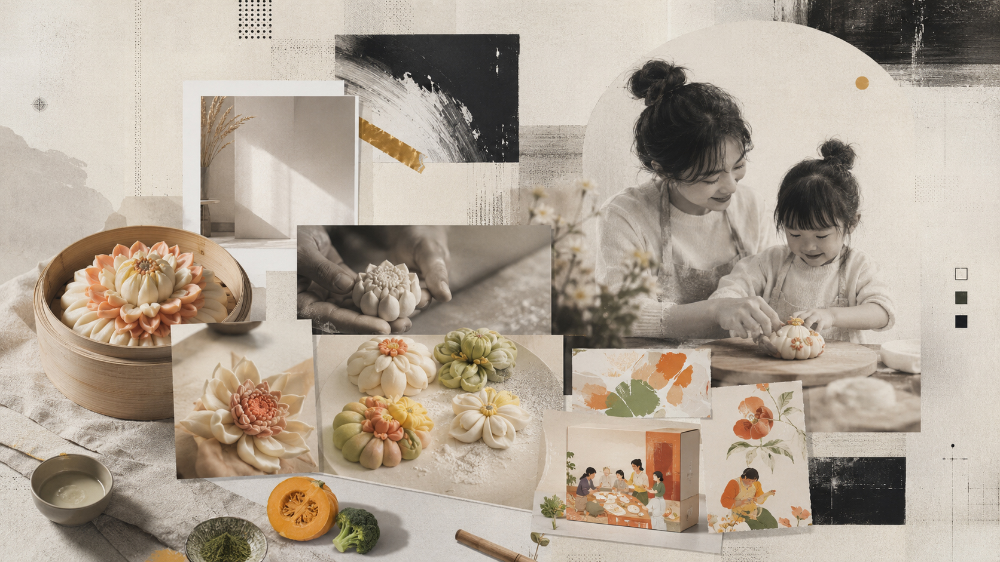

EXECUTION
创意执行
打造IP： “馍小福” 通过短视频、 快闪活动、 产品包装， 形成完整品牌体验。


02 / BRAND STRATEGY

BACKGROUND
传统非遗食品在年轻消费群体中 面临传播断层问题。 本项目通过IP打造、 产品年轻化和体验营销， 让传统花馍从节庆食品 转变为年轻家庭消费产品。
INSIGHT
年轻父母关注： 健康、 颜值、 亲子互动。 因此品牌围绕： “让孩子主动吃饭” 建立情感连接。
EXECUTION
打造IP： “馍小福” 通过短视频、 快闪活动、 产品包装， 形成完整品牌体验。